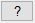
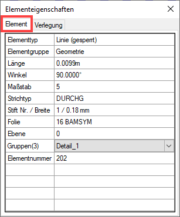
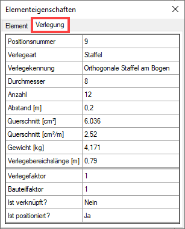
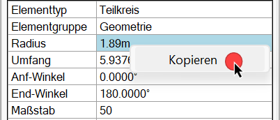
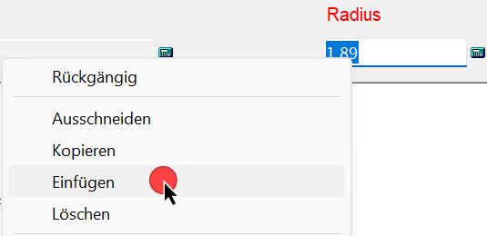

")
Abfragen der Eigenschaften eines Zeichenelements.
Über die Elementeigenschaften-Funktion in der unteren Menüleiste können detaillierte Verlege-Informationen wie Verknüpfungsstatus, Bauteil- und Verlegefaktor abgefragt werden.
Über den Funktionsbereich
Die Funktion [Anzeig] zeigt die Eigenschaften eines Elements im Funktionsbereich an.
§Klicken Sie ein beliebiges, abzufragendes Element an. [Element mit Cursor wählen].
-Die Elementeigenschaften werden im Funktionsbereich angezeigt.
-Sie können sofort ein anderes Element abfragen.
Die Abfrage über die untere Menüleiste kann aus jeder Menüfunktion heraus ausgeführt werden.
§Klicken Sie in der unteren Menüleiste auf 
Das Fenster Elementeigenschaften wird geöffnet.
§Wählen Sie, welche Elemente Sie abfragen möchten, indem Sie die entsprechende Registerkarte auswählen:
-Element = Je nach Element (Linie, Kreis, Text) werden verschiedene elementspezifische Eigenschaften angezeigt. Darunter auch die Gruppen- und Folienzugehörigkeit sowie die Ebene, auf der das Element liegt.
-Verlegung = Zeigt zusätzliche Informationen zu Verlegungen an, die mit dem Formstahl-Menü [Formst] erzeugt wurden.
§Klicken Sie das abzufragende Element an. [Element mit Cursor wählen].
-Das Element wird markiert und die Elementeigenschaften werden angezeigt.
-Ist Verlegung aktiv, können nur Formstahlbewehrungen angeklickt werden. Markiert wird die gesamte Verlegung mit der zugehörigen Positionierung. Sie können zur Registerkarte Element wechseln, um sich weitere Informationen anzeigen zu lassen.
-Sie können sofort ein anderes Element abfragen.
 |
 |
§Sie können bestimmte Werte kopieren, indem Sie einen Rechtsklick auf einem Wert ausführen.
 |
Ein kopierter Wert kann in die aktive Abfrage über Rechtsklick → Einfügen eingesetzt werden. Hierbei wird der exakte Wert eingesetzt. Sollte sich bereits ein Wert in der Eingabe befinden, kann dieser markiert und durch den kopierten Wert ersetzt werden.
 |
§Um die Elementabfrage zu beenden, drücken Sie die Esc-Taste oder klicken Sie eine andere Funktion an.
Das Fenster Elementeigenschaften wird geschlossen.
Gruppierte Elemente
(Nur Element-Registerkarte)
Wenn das angeklickte Element zu einer von Ihnen erstellten Gruppe gehört, wird angezeigt, in wie vielen Gruppen (z. B. (3)) und in welchen Gruppen das Element enthalten ist. Die Gruppenliste können Sie mit aufklappen. Angezeigt wird der Gruppenname.
Gesperrte Elemente
(Nur Element-Registerkarte)
Ist das angeklickte Element gesperrt, wird in der Zeile "Elementtyp" ein Vermerk angeschrieben z. B. "(Linie (gesperrt))".
Siehe auch: